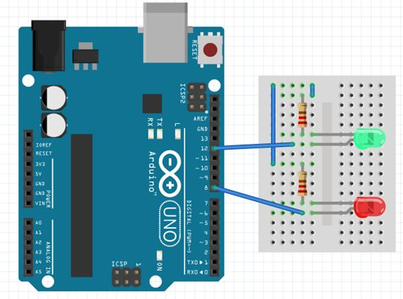

Welcome to the documentation for Animal Sound Match, a fast-paced game where players match sounds of cows and dogs to flashing images on the screen. This document provides an overview of the project, its components, and instructions on how to play.
Project Outline
Project Title: Animal Sound Match
Creator: Meredith Bevill
Narrative Description
"Animal Sound Match" is an interactive game designed to test players' reflexes and auditory recognition skills. With just 20 seconds on the clock, players must press the corresponding button (cow or dog) at the exact moment the image appears to score points. The game features flashing images of cows and dogs accompanied by their respective sounds. A correct match earns the player a point and illuminates a green LED on the Arduino board, while a wrong match deducts a point and activates a red LED.
Components
Graphics
Cow Image:
Dog Image:
Sound
Cow Sound:
Dog Sound:
Hardware Input
Arduino Setup: Two buttons are linked to Arduino pins. The Arduino code is programmed to detect button presses and communicate with the p5.js code. When a button is pressed, it triggers the corresponding cow or dog sound to play.
Hardware Output
Green LED Output: The green LED will flash if the player hits the correct button at the correct time.
Red LED Output: The red LED will flash if the player hits the incorrect button.

Future Development
There are several exciting possibilities for enhancing the Animal Sound Match game:
Background Music: Integrate background music to enhance the atmosphere and engagement of the game.
Level-based Gameplay: Implement a level system where the game progressively becomes more challenging as players advance. This could include faster image flashing, shorter response times, and additional animal sounds to match.
Additional Animals and Buttons: Expand the variety of animals featured in the game and introduce more buttons for players to interact with.
Multiplayer Mode: Develop a multiplayer mode to allow players to compete against each other in real-time, adding a competitive element to the game.
Scoreboard and Achievements: Implement a scoreboard to track players' scores and achievements, providing motivation for replayability and competition among players.
Customization Options: Allow players to customize their gaming experience by choosing different themes, sound effects, and button configurations.